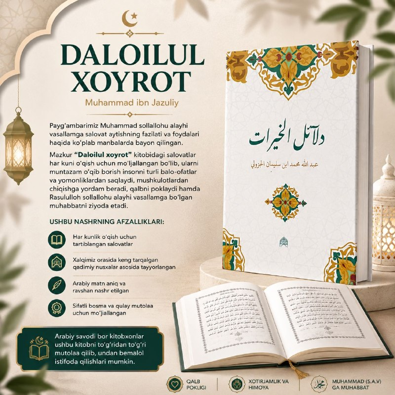

Далаиль аль-хайрат
Сборник салаватов Посланнику Аллаха. Издание подготовлено на основе древних списков, широко распространённых среди нашего народа.
ПодробнееНаши издания
Наши издания по тасаввуфу, вероучению и классическому тюркскому наследию.

Сборник салаватов Посланнику Аллаха. Издание подготовлено на основе древних списков, широко распространённых среди нашего народа.
Подробнее
Редкий образец классической литературы тасаввуфа. Смыслы свободы, довольства и покорности, путь к совершенству.
Путь к совершенству начинается с ма‘рифата.
Подробнее
Термины тасаввуфа в форме вопросов и ответов: муракаба, мушахада, тааммуль, таква, футувва и другие понятия.
Единство шариата и тариката — основа того, чтобы стать совершенным человеком.
Подробнее
Собрание из пяти книг, подготовленное для чтения научного наследия предков по первоисточнику.
Подробнее